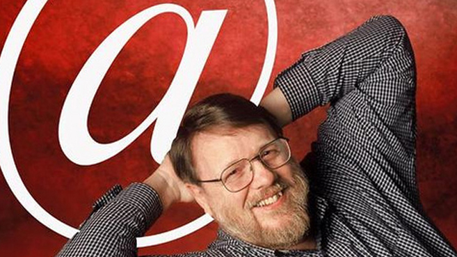

|
|  Ray Tomlinson Implementó el primer sistema de correo electrónico. El antecedente más importante de lo que hoy entendemos como correo electrónico surgió en 1962, con la computadora IBM 7090, que permitía la interacción de distintos usuarios desde terminales remotas, los cuales podían intercambiar mensajes. Sin embargo, en 1965 surgió el servicio MAIL, verdadero precursor del email, que permitía el envío y recepción de mensajes entre los usuarios de este ordenador. Ray Tomlinson fue el creador del actual correo electrónico. Creó el primer protocolo experimental para el intercambio de información entre máquinas conectadas a una misma red: CYPNET. Fue él también quien introdujo la arroba (@) como símbolo demarcador para distinguir en las direcciones de correo entre el nombre de usuario y el nombre del servicio. Con la llegada y masificación de Internet, obviamente, el correo electrónico se convirtió en una herramienta popular y cotidiana. Se ofreció por primera vez de manera gratuita en 1971 y en 1977 ya era el mecanismo de intercambio de información estándar a nivel mundial en las comunidades online. |
|---|
| Regresar al menú |